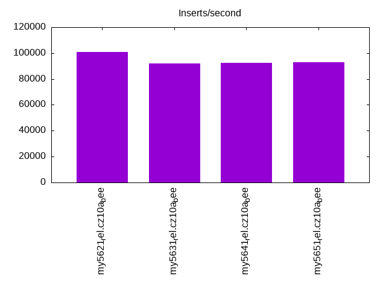
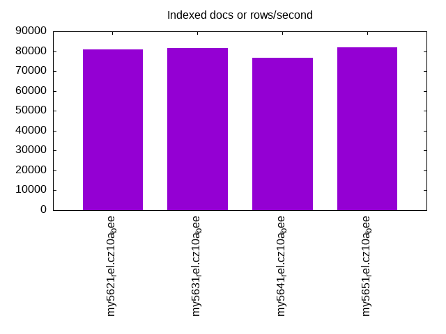
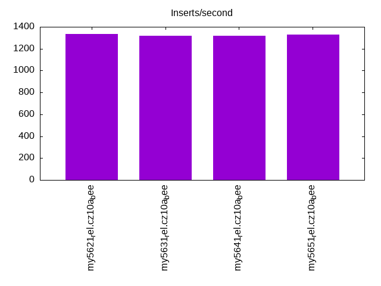
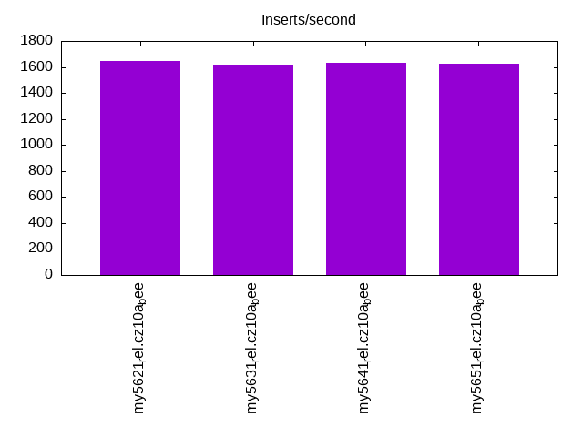
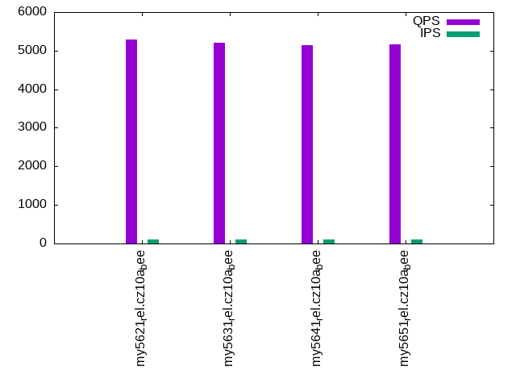
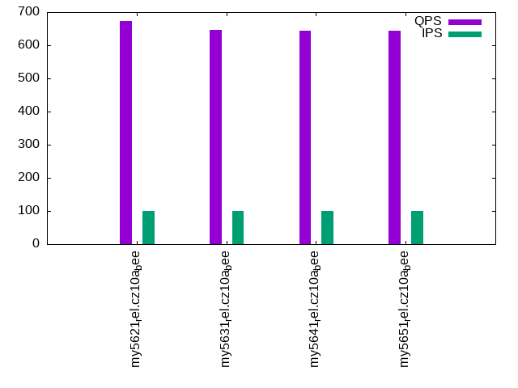
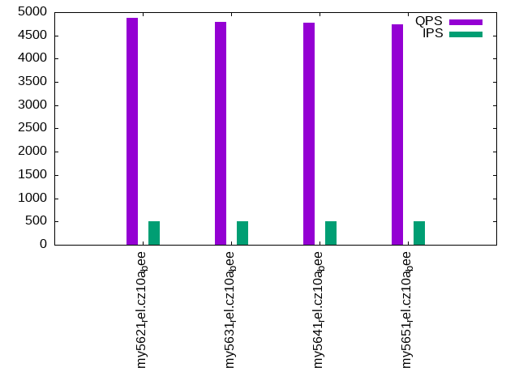
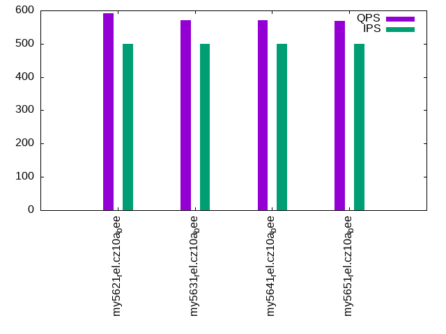
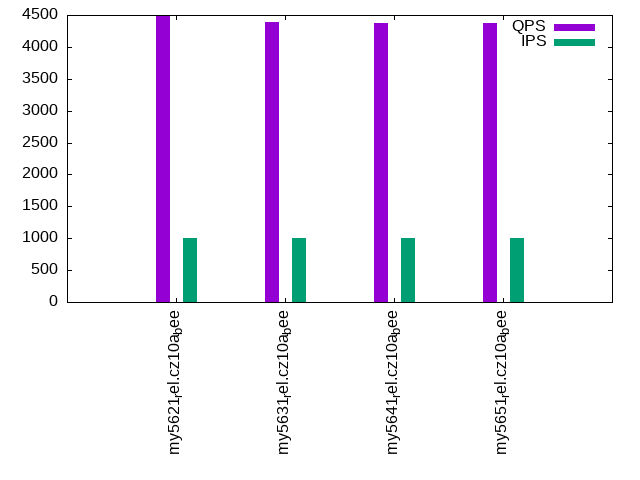
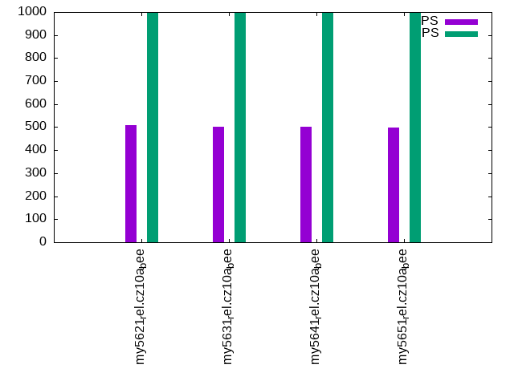

This is a report for the insert benchmark with 800M docs and 1 client(s). It is generated by scripts (bash, awk, sed) and Tufte might not be impressed. An overview of the insert benchmark is here and a short update is here. Below, by DBMS, I mean DBMS+version.config. An example is my8020.c10b40 where my means MySQL, 8020 is version 8.0.20 and c10b40 is the name for the configuration file.
The test server has 8 AMD cores, 16G RAM and an NVMe SSD. It is described here as the Beelink. The benchmark was run with 1 client and there were 1 or 3 connections per client (1 for queries or inserts without rate limits, 1+1 for rate limited inserts+deletes). It uses 1 table. It loads 800M rows per table without secondary indexes, creates 3 secondary indexes per table, then inserts 5m rows per table with a delete per insert to avoid growing the table. It then does 6 read+write tests for 1800s each that do queries as fast as possible with 100,100,500,500,1000,1000 inserts/s and the same for deletes/s per client concurrent with the queries. The database is larger than memory. Clients and the DBMS share one server. The per-database configs are in the per-database subdirectories here.
The tested DBMS are:
The numbers are inserts/s for l.i0, l.i1 and l.i2, indexed docs (or rows) /s for l.x and queries/s for qr100, qp100 thru qr1000, qp1000" The values are the average rate over the entire test for inserts (IPS) and queries (QPS). The range of values for IPS and QPS is split into 3 parts: bottom 25%, middle 50%, top 25%. Values in the bottom 25% have a red background, values in the top 25% have a green background and values in the middle have no color. A gray background is used for values that can be ignored because the DBMS did not sustain the target insert rate. Red backgrounds are not used when the minimum value is within 80% of the max value.
| dbms | l.i0 | l.x | l.i1 | l.i2 | qr100 | qp100 | qr500 | qp500 | qr1000 | qp1000 |
|---|---|---|---|---|---|---|---|---|---|---|
| my5621_rel.cz10a_bee | 101048 | 80800 | 1332 | 1645 | 5291 | 672 | 4877 | 592 | 4477 | 510 |
| my5631_rel.cz10a_bee | 91880 | 81708 | 1320 | 1621 | 5205 | 647 | 4797 | 570 | 4392 | 502 |
| my5641_rel.cz10a_bee | 92368 | 76518 | 1321 | 1629 | 5152 | 645 | 4770 | 570 | 4382 | 501 |
| my5651_rel.cz10a_bee | 92904 | 81875 | 1327 | 1626 | 5161 | 645 | 4730 | 569 | 4370 | 499 |
This table has relative throughput, throughput for the DBMS relative to the DBMS in the first line, using the absolute throughput from the previous table. Values less than 0.95 have a yellow background. Values greater than 1.05 have a blue background.
| dbms | l.i0 | l.x | l.i1 | l.i2 | qr100 | qp100 | qr500 | qp500 | qr1000 | qp1000 |
|---|---|---|---|---|---|---|---|---|---|---|
| my5621_rel.cz10a_bee | 1.00 | 1.00 | 1.00 | 1.00 | 1.00 | 1.00 | 1.00 | 1.00 | 1.00 | 1.00 |
| my5631_rel.cz10a_bee | 0.91 | 1.01 | 0.99 | 0.99 | 0.98 | 0.96 | 0.98 | 0.96 | 0.98 | 0.98 |
| my5641_rel.cz10a_bee | 0.91 | 0.95 | 0.99 | 0.99 | 0.97 | 0.96 | 0.98 | 0.96 | 0.98 | 0.98 |
| my5651_rel.cz10a_bee | 0.92 | 1.01 | 1.00 | 0.99 | 0.98 | 0.96 | 0.97 | 0.96 | 0.98 | 0.98 |
This lists the average rate of inserts/s for the tests that do inserts concurrent with queries. For such tests the query rate is listed in the table above. The read+write tests are setup so that the insert rate should match the target rate every second. Cells that are not at least 95% of the target have a red background to indicate a failure to satisfy the target.
| dbms | qr100.L1 | qp100.L2 | qr500.L3 | qp500.L4 | qr1000.L5 | qp1000.L6 |
|---|---|---|---|---|---|---|
| my5621_rel.cz10a_bee | 100 | 100 | 499 | 499 | 998 | 998 |
| my5631_rel.cz10a_bee | 100 | 100 | 499 | 499 | 998 | 998 |
| my5641_rel.cz10a_bee | 100 | 100 | 499 | 499 | 998 | 999 |
| my5651_rel.cz10a_bee | 100 | 100 | 499 | 499 | 998 | 998 |
| target | 100 | 100 | 500 | 500 | 1000 | 1000 |
l.i0: load without secondary indexes. Graphs for performance per 1-second interval are here.
Average throughput:
Insert response time histogram: each cell has the percentage of responses that take <= the time in the header and max is the max response time in seconds. For the max column values in the top 25% of the range have a red background and in the bottom 25% of the range have a green background. The red background is not used when the min value is within 80% of the max value.
| dbms | 256us | 1ms | 4ms | 16ms | 64ms | 256ms | 1s | 4s | 16s | gt | max |
|---|---|---|---|---|---|---|---|---|---|---|---|
| my5621_rel.cz10a_bee | 92.077 | 7.801 | 0.118 | 0.003 | 0.002 | 0.103 | |||||
| my5631_rel.cz10a_bee | 61.238 | 38.614 | 0.085 | 0.060 | 0.004 | 0.215 | |||||
| my5641_rel.cz10a_bee | 64.912 | 34.941 | 0.083 | 0.060 | 0.004 | 0.184 | |||||
| my5651_rel.cz10a_bee | 70.153 | 29.700 | 0.082 | 0.061 | 0.004 | 0.230 |
Performance metrics for the DBMS listed above. Some are normalized by throughput, others are not. Legend for results is here.
ips qps rps rmbps wps wmbps rpq rkbpq wpi wkbpi csps cpups cspq cpupq dbgb1 dbgb2 rss maxop p50 p99 tag 101048 0 885 3.5 512.2 36.4 0.009 0.035 0.005 0.369 12625 22.4 0.125 18 52.6 69.1 10.6 0.103 101218 90965 my5621_rel.cz10a_bee 91880 0 804 3.1 459.8 33.2 0.009 0.035 0.005 0.370 11605 21.9 0.126 19 52.6 69.1 10.6 0.215 91908 76270 my5631_rel.cz10a_bee 92368 0 809 3.2 460.8 33.3 0.009 0.035 0.005 0.369 11658 21.9 0.126 19 52.6 69.1 10.6 0.184 92500 76089 my5641_rel.cz10a_bee 92904 0 814 3.2 465.3 33.5 0.009 0.035 0.005 0.370 11744 22.0 0.126 19 52.6 69.1 10.6 0.230 93197 76048 my5651_rel.cz10a_bee
l.x: create secondary indexes.
Average throughput:
Performance metrics for the DBMS listed above. Some are normalized by throughput, others are not. Legend for results is here.
ips qps rps rmbps wps wmbps rpq rkbpq wpi wkbpi csps cpups cspq cpupq dbgb1 dbgb2 rss maxop p50 p99 tag 80800 0 568 81.7 708.8 103.6 0.007 1.035 0.009 1.312 1840 11.2 0.023 11 111.4 127.9 10.8 0.002 NA NA my5621_rel.cz10a_bee 81708 0 546 82.6 699.6 104.7 0.007 1.035 0.009 1.312 1807 11.3 0.022 11 111.4 127.9 10.8 0.002 NA NA my5631_rel.cz10a_bee 76518 0 516 77.4 671.5 98.2 0.007 1.035 0.009 1.315 1788 10.9 0.023 11 111.4 127.9 10.8 0.003 NA NA my5641_rel.cz10a_bee 81875 0 550 82.7 709.1 105.0 0.007 1.035 0.009 1.313 1857 11.1 0.023 11 111.4 127.9 10.8 0.003 NA NA my5651_rel.cz10a_bee
l.i1: continue load after secondary indexes created with 50 inserts per transaction. Graphs for performance per 1-second interval are here.
Average throughput:
Insert response time histogram: each cell has the percentage of responses that take <= the time in the header and max is the max response time in seconds. For the max column values in the top 25% of the range have a red background and in the bottom 25% of the range have a green background. The red background is not used when the min value is within 80% of the max value.
| dbms | 256us | 1ms | 4ms | 16ms | 64ms | 256ms | 1s | 4s | 16s | gt | max |
|---|---|---|---|---|---|---|---|---|---|---|---|
| my5621_rel.cz10a_bee | 0.585 | 89.492 | 9.921 | 0.001 | 0.689 | ||||||
| my5631_rel.cz10a_bee | 0.475 | 89.359 | 10.161 | 0.005 | 0.797 | ||||||
| my5641_rel.cz10a_bee | 0.496 | 89.450 | 10.050 | 0.004 | 0.863 | ||||||
| my5651_rel.cz10a_bee | 0.484 | 89.338 | 10.174 | 0.005 | 0.710 |
Delete response time histogram: each cell has the percentage of responses that take <= the time in the header and max is the max response time in seconds. For the max column values in the top 25% of the range have a red background and in the bottom 25% of the range have a green background. The red background is not used when the min value is within 80% of the max value.
| dbms | 256us | 1ms | 4ms | 16ms | 64ms | 256ms | 1s | 4s | 16s | gt | max |
|---|---|---|---|---|---|---|---|---|---|---|---|
| my5621_rel.cz10a_bee | 7.965 | 87.580 | 4.446 | 0.007 | 0.001 | 0.557 | |||||
| my5631_rel.cz10a_bee | 7.706 | 87.669 | 4.617 | 0.006 | 0.001 | 0.639 | |||||
| my5641_rel.cz10a_bee | 7.303 | 88.135 | 4.553 | 0.009 | 0.001 | 0.681 | |||||
| my5651_rel.cz10a_bee | 6.101 | 89.356 | 4.539 | 0.003 | 0.001 | 0.588 |
Performance metrics for the DBMS listed above. Some are normalized by throughput, others are not. Legend for results is here.
ips qps rps rmbps wps wmbps rpq rkbpq wpi wkbpi csps cpups cspq cpupq dbgb1 dbgb2 rss maxop p50 p99 tag 1332 0 7474 116.2 9084.5 296.7 5.613 89.362 6.823 228.150 42966 14.2 32.269 853 148.0 164.5 10.5 0.689 1249 899 my5621_rel.cz10a_bee 1320 0 7426 115.5 9092.6 294.6 5.624 89.532 6.886 228.446 42609 14.2 32.267 860 147.9 164.4 10.5 0.797 1249 849 my5631_rel.cz10a_bee 1321 0 7430 115.5 9109.5 295.0 5.623 89.523 6.894 228.597 42852 14.2 32.429 860 147.9 164.4 10.5 0.863 1249 849 my5641_rel.cz10a_bee 1327 0 7445 115.8 9122.0 295.5 5.612 89.348 6.876 228.071 43015 14.3 32.425 862 148.0 164.5 10.5 0.710 1249 849 my5651_rel.cz10a_bee
l.i2: continue load after secondary indexes created with 5 inserts per transaction. Graphs for performance per 1-second interval are here.
Average throughput:
Insert response time histogram: each cell has the percentage of responses that take <= the time in the header and max is the max response time in seconds. For the max column values in the top 25% of the range have a red background and in the bottom 25% of the range have a green background. The red background is not used when the min value is within 80% of the max value.
| dbms | 256us | 1ms | 4ms | 16ms | 64ms | 256ms | 1s | 4s | 16s | gt | max |
|---|---|---|---|---|---|---|---|---|---|---|---|
| my5621_rel.cz10a_bee | 3.379 | 82.553 | 13.617 | 0.451 | 0.001 | 0.066 | |||||
| my5631_rel.cz10a_bee | 3.125 | 82.522 | 13.857 | 0.496 | 0.062 | ||||||
| my5641_rel.cz10a_bee | 3.193 | 82.624 | 13.713 | 0.470 | 0.001 | 0.065 | |||||
| my5651_rel.cz10a_bee | 3.236 | 82.431 | 13.881 | 0.452 | 0.061 |
Delete response time histogram: each cell has the percentage of responses that take <= the time in the header and max is the max response time in seconds. For the max column values in the top 25% of the range have a red background and in the bottom 25% of the range have a green background. The red background is not used when the min value is within 80% of the max value.
| dbms | 256us | 1ms | 4ms | 16ms | 64ms | 256ms | 1s | 4s | 16s | gt | max |
|---|---|---|---|---|---|---|---|---|---|---|---|
| my5621_rel.cz10a_bee | 19.262 | 77.797 | 2.847 | 0.093 | 0.058 | ||||||
| my5631_rel.cz10a_bee | 17.482 | 79.429 | 2.968 | 0.121 | 0.061 | ||||||
| my5641_rel.cz10a_bee | 18.896 | 78.067 | 2.939 | 0.099 | 0.061 | ||||||
| my5651_rel.cz10a_bee | 18.626 | 78.331 | 2.943 | 0.101 | 0.044 |
Performance metrics for the DBMS listed above. Some are normalized by throughput, others are not. Legend for results is here.
ips qps rps rmbps wps wmbps rpq rkbpq wpi wkbpi csps cpups cspq cpupq dbgb1 dbgb2 rss maxop p50 p99 tag 1645 0 7757 115.2 8791.9 275.6 4.716 71.734 5.346 171.567 48881 20.8 29.720 1012 148.0 164.5 10.5 0.066 1663 1344 my5621_rel.cz10a_bee 1621 0 7674 114.0 8766.9 272.5 4.735 72.039 5.409 172.160 48228 20.8 29.758 1027 147.9 164.5 10.5 0.062 1638 1328 my5631_rel.cz10a_bee 1629 0 7698 114.4 8814.6 273.5 4.727 71.909 5.412 171.958 48528 20.8 29.797 1022 147.9 164.4 10.5 0.065 1644 1333 my5641_rel.cz10a_bee 1626 0 7700 114.4 8779.8 272.8 4.735 72.047 5.400 171.814 48447 20.8 29.795 1023 148.0 164.5 10.5 0.061 1643 1334 my5651_rel.cz10a_bee
qr100.L1: range queries with 100 insert/s per client. Graphs for performance per 1-second interval are here.
Average throughput:
Query response time histogram: each cell has the percentage of responses that take <= the time in the header and max is the max response time in seconds. For max values in the top 25% of the range have a red background and in the bottom 25% of the range have a green background. The red background is not used when the min value is within 80% of the max value.
| dbms | 256us | 1ms | 4ms | 16ms | 64ms | 256ms | 1s | 4s | 16s | gt | max |
|---|---|---|---|---|---|---|---|---|---|---|---|
| my5621_rel.cz10a_bee | 94.658 | 5.190 | 0.136 | 0.015 | nonzero | 0.020 | |||||
| my5631_rel.cz10a_bee | 94.125 | 5.727 | 0.132 | 0.015 | nonzero | 0.023 | |||||
| my5641_rel.cz10a_bee | 93.917 | 5.934 | 0.134 | 0.015 | nonzero | 0.019 | |||||
| my5651_rel.cz10a_bee | 93.948 | 5.898 | 0.137 | 0.017 | nonzero | 0.017 |
Insert response time histogram: each cell has the percentage of responses that take <= the time in the header and max is the max response time in seconds. For max values in the top 25% of the range have a red background and in the bottom 25% of the range have a green background. The red background is not used when the min value is within 80% of the max value.
| dbms | 256us | 1ms | 4ms | 16ms | 64ms | 256ms | 1s | 4s | 16s | gt | max |
|---|---|---|---|---|---|---|---|---|---|---|---|
| my5621_rel.cz10a_bee | 0.083 | 99.778 | 0.139 | 0.083 | |||||||
| my5631_rel.cz10a_bee | 0.056 | 99.528 | 0.417 | 0.128 | |||||||
| my5641_rel.cz10a_bee | 0.167 | 99.778 | 0.056 | 0.075 | |||||||
| my5651_rel.cz10a_bee | 0.222 | 99.583 | 0.194 | 0.107 |
Delete response time histogram: each cell has the percentage of responses that take <= the time in the header and max is the max response time in seconds. For max values in the top 25% of the range have a red background and in the bottom 25% of the range have a green background. The red background is not used when the min value is within 80% of the max value.
| dbms | 256us | 1ms | 4ms | 16ms | 64ms | 256ms | 1s | 4s | 16s | gt | max |
|---|---|---|---|---|---|---|---|---|---|---|---|
| my5621_rel.cz10a_bee | 17.278 | 80.972 | 1.750 | 0.040 | |||||||
| my5631_rel.cz10a_bee | 15.889 | 81.722 | 2.389 | 0.045 | |||||||
| my5641_rel.cz10a_bee | 17.389 | 81.361 | 1.250 | 0.034 | |||||||
| my5651_rel.cz10a_bee | 17.500 | 80.611 | 1.889 | 0.035 |
Performance metrics for the DBMS listed above. Some are normalized by throughput, others are not. Legend for results is here.
ips qps rps rmbps wps wmbps rpq rkbpq wpi wkbpi csps cpups cspq cpupq dbgb1 dbgb2 rss maxop p50 p99 tag 100 5291 632 9.8 552.0 17.2 0.119 1.900 5.531 176.057 23201 13.1 4.385 198 148.0 164.5 10.5 0.020 5290 3772 my5621_rel.cz10a_bee 100 5205 631 9.8 647.0 19.9 0.121 1.930 6.490 204.354 23198 13.2 4.457 203 147.9 164.5 10.5 0.023 5198 3292 my5631_rel.cz10a_bee 100 5152 631 9.8 556.0 17.1 0.122 1.947 5.571 175.954 22676 13.0 4.401 202 147.9 164.4 10.5 0.019 5147 3419 my5641_rel.cz10a_bee 100 5161 632 9.8 622.4 19.1 0.122 1.947 6.237 196.355 22923 13.2 4.442 205 148.0 164.5 10.5 0.017 5162 3261 my5651_rel.cz10a_bee
qp100.L2: point queries with 100 insert/s per client. Graphs for performance per 1-second interval are here.
Average throughput:
Query response time histogram: each cell has the percentage of responses that take <= the time in the header and max is the max response time in seconds. For max values in the top 25% of the range have a red background and in the bottom 25% of the range have a green background. The red background is not used when the min value is within 80% of the max value.
| dbms | 256us | 1ms | 4ms | 16ms | 64ms | 256ms | 1s | 4s | 16s | gt | max |
|---|---|---|---|---|---|---|---|---|---|---|---|
| my5621_rel.cz10a_bee | 0.874 | 98.899 | 0.226 | 0.001 | 0.037 | ||||||
| my5631_rel.cz10a_bee | 0.561 | 99.203 | 0.235 | 0.001 | 0.036 | ||||||
| my5641_rel.cz10a_bee | 0.500 | 99.279 | 0.220 | 0.001 | 0.039 | ||||||
| my5651_rel.cz10a_bee | 0.527 | 99.236 | 0.236 | 0.001 | 0.036 |
Insert response time histogram: each cell has the percentage of responses that take <= the time in the header and max is the max response time in seconds. For max values in the top 25% of the range have a red background and in the bottom 25% of the range have a green background. The red background is not used when the min value is within 80% of the max value.
| dbms | 256us | 1ms | 4ms | 16ms | 64ms | 256ms | 1s | 4s | 16s | gt | max |
|---|---|---|---|---|---|---|---|---|---|---|---|
| my5621_rel.cz10a_bee | 0.278 | 99.389 | 0.333 | 0.115 | |||||||
| my5631_rel.cz10a_bee | 0.111 | 99.639 | 0.250 | 0.082 | |||||||
| my5641_rel.cz10a_bee | 0.167 | 99.500 | 0.333 | 0.098 | |||||||
| my5651_rel.cz10a_bee | 0.083 | 99.611 | 0.306 | 0.094 |
Delete response time histogram: each cell has the percentage of responses that take <= the time in the header and max is the max response time in seconds. For max values in the top 25% of the range have a red background and in the bottom 25% of the range have a green background. The red background is not used when the min value is within 80% of the max value.
| dbms | 256us | 1ms | 4ms | 16ms | 64ms | 256ms | 1s | 4s | 16s | gt | max |
|---|---|---|---|---|---|---|---|---|---|---|---|
| my5621_rel.cz10a_bee | 62.472 | 37.028 | 0.472 | 0.028 | 0.070 | ||||||
| my5631_rel.cz10a_bee | 58.222 | 41.111 | 0.667 | 0.049 | |||||||
| my5641_rel.cz10a_bee | 66.000 | 33.444 | 0.556 | 0.055 | |||||||
| my5651_rel.cz10a_bee | 66.194 | 33.500 | 0.306 | 0.041 |
Performance metrics for the DBMS listed above. Some are normalized by throughput, others are not. Legend for results is here.
ips qps rps rmbps wps wmbps rpq rkbpq wpi wkbpi csps cpups cspq cpupq dbgb1 dbgb2 rss maxop p50 p99 tag 100 672 6554 102.4 994.2 30.5 9.758 156.047 9.962 313.152 18215 4.7 27.118 560 148.0 164.5 10.5 0.037 672 575 my5621_rel.cz10a_bee 100 647 6343 99.1 864.9 26.3 9.799 156.709 8.666 270.225 17277 4.6 26.692 569 147.9 164.5 10.5 0.036 655 591 my5631_rel.cz10a_bee 100 645 6333 98.9 965.4 29.4 9.818 157.006 9.673 301.912 17582 4.5 27.259 558 147.9 164.4 10.5 0.039 655 559 my5641_rel.cz10a_bee 100 645 6327 98.8 888.5 27.0 9.811 156.891 8.903 277.307 17310 4.7 26.842 583 148.0 164.5 10.5 0.036 655 591 my5651_rel.cz10a_bee
qr500.L3: range queries with 500 insert/s per client. Graphs for performance per 1-second interval are here.
Average throughput:
Query response time histogram: each cell has the percentage of responses that take <= the time in the header and max is the max response time in seconds. For max values in the top 25% of the range have a red background and in the bottom 25% of the range have a green background. The red background is not used when the min value is within 80% of the max value.
| dbms | 256us | 1ms | 4ms | 16ms | 64ms | 256ms | 1s | 4s | 16s | gt | max |
|---|---|---|---|---|---|---|---|---|---|---|---|
| my5621_rel.cz10a_bee | 89.493 | 10.245 | 0.235 | 0.027 | 0.013 | ||||||
| my5631_rel.cz10a_bee | 88.787 | 10.945 | 0.239 | 0.028 | nonzero | 0.036 | |||||
| my5641_rel.cz10a_bee | 88.673 | 11.048 | 0.251 | 0.027 | nonzero | 0.017 | |||||
| my5651_rel.cz10a_bee | 88.236 | 11.477 | 0.259 | 0.028 | nonzero | 0.039 |
Insert response time histogram: each cell has the percentage of responses that take <= the time in the header and max is the max response time in seconds. For max values in the top 25% of the range have a red background and in the bottom 25% of the range have a green background. The red background is not used when the min value is within 80% of the max value.
| dbms | 256us | 1ms | 4ms | 16ms | 64ms | 256ms | 1s | 4s | 16s | gt | max |
|---|---|---|---|---|---|---|---|---|---|---|---|
| my5621_rel.cz10a_bee | 6.639 | 93.328 | 0.033 | 0.072 | |||||||
| my5631_rel.cz10a_bee | 5.689 | 94.272 | 0.039 | 0.089 | |||||||
| my5641_rel.cz10a_bee | 5.383 | 94.567 | 0.050 | 0.074 | |||||||
| my5651_rel.cz10a_bee | 5.694 | 94.211 | 0.094 | 0.079 |
Delete response time histogram: each cell has the percentage of responses that take <= the time in the header and max is the max response time in seconds. For max values in the top 25% of the range have a red background and in the bottom 25% of the range have a green background. The red background is not used when the min value is within 80% of the max value.
| dbms | 256us | 1ms | 4ms | 16ms | 64ms | 256ms | 1s | 4s | 16s | gt | max |
|---|---|---|---|---|---|---|---|---|---|---|---|
| my5621_rel.cz10a_bee | 14.367 | 85.361 | 0.272 | 0.028 | |||||||
| my5631_rel.cz10a_bee | 13.822 | 85.917 | 0.261 | 0.027 | |||||||
| my5641_rel.cz10a_bee | 11.967 | 87.739 | 0.294 | 0.029 | |||||||
| my5651_rel.cz10a_bee | 12.522 | 86.994 | 0.483 | 0.035 |
Performance metrics for the DBMS listed above. Some are normalized by throughput, others are not. Legend for results is here.
ips qps rps rmbps wps wmbps rpq rkbpq wpi wkbpi csps cpups cspq cpupq dbgb1 dbgb2 rss maxop p50 p99 tag 499 4877 2978 46.3 3115.4 96.8 0.611 9.723 6.246 198.693 33746 16.6 6.919 272 148.0 164.5 10.5 0.013 4891 2955 my5621_rel.cz10a_bee 499 4797 2978 46.3 3154.2 97.1 0.621 9.886 6.324 199.369 33469 16.6 6.977 277 147.9 164.5 10.5 0.036 4811 2876 my5631_rel.cz10a_bee 499 4770 2978 46.3 3167.7 97.5 0.624 9.945 6.351 200.165 33399 16.6 7.003 278 147.9 164.4 10.5 0.017 4783 2855 my5641_rel.cz10a_bee 499 4730 2978 46.3 3168.8 97.5 0.630 10.025 6.349 200.063 33261 16.6 7.031 281 148.0 164.5 10.5 0.039 4747 2812 my5651_rel.cz10a_bee
qp500.L4: point queries with 500 insert/s per client. Graphs for performance per 1-second interval are here.
Average throughput:
Query response time histogram: each cell has the percentage of responses that take <= the time in the header and max is the max response time in seconds. For max values in the top 25% of the range have a red background and in the bottom 25% of the range have a green background. The red background is not used when the min value is within 80% of the max value.
| dbms | 256us | 1ms | 4ms | 16ms | 64ms | 256ms | 1s | 4s | 16s | gt | max |
|---|---|---|---|---|---|---|---|---|---|---|---|
| my5621_rel.cz10a_bee | 0.060 | 97.954 | 1.979 | 0.007 | 0.044 | ||||||
| my5631_rel.cz10a_bee | 0.033 | 97.757 | 2.203 | 0.007 | 0.043 | ||||||
| my5641_rel.cz10a_bee | 0.033 | 97.752 | 2.207 | 0.008 | 0.047 | ||||||
| my5651_rel.cz10a_bee | 0.028 | 97.769 | 2.195 | 0.007 | 0.047 |
Insert response time histogram: each cell has the percentage of responses that take <= the time in the header and max is the max response time in seconds. For max values in the top 25% of the range have a red background and in the bottom 25% of the range have a green background. The red background is not used when the min value is within 80% of the max value.
| dbms | 256us | 1ms | 4ms | 16ms | 64ms | 256ms | 1s | 4s | 16s | gt | max |
|---|---|---|---|---|---|---|---|---|---|---|---|
| my5621_rel.cz10a_bee | 4.894 | 94.283 | 0.822 | 0.142 | |||||||
| my5631_rel.cz10a_bee | 4.739 | 94.183 | 1.078 | 0.116 | |||||||
| my5641_rel.cz10a_bee | 4.111 | 94.528 | 1.361 | 0.117 | |||||||
| my5651_rel.cz10a_bee | 4.972 | 94.261 | 0.767 | 0.116 |
Delete response time histogram: each cell has the percentage of responses that take <= the time in the header and max is the max response time in seconds. For max values in the top 25% of the range have a red background and in the bottom 25% of the range have a green background. The red background is not used when the min value is within 80% of the max value.
| dbms | 256us | 1ms | 4ms | 16ms | 64ms | 256ms | 1s | 4s | 16s | gt | max |
|---|---|---|---|---|---|---|---|---|---|---|---|
| my5621_rel.cz10a_bee | 24.906 | 72.711 | 2.383 | 0.061 | |||||||
| my5631_rel.cz10a_bee | 23.906 | 73.400 | 2.694 | 0.050 | |||||||
| my5641_rel.cz10a_bee | 23.994 | 73.400 | 2.600 | 0.006 | 0.085 | ||||||
| my5651_rel.cz10a_bee | 23.094 | 74.089 | 2.817 | 0.062 |
Performance metrics for the DBMS listed above. Some are normalized by throughput, others are not. Legend for results is here.
ips qps rps rmbps wps wmbps rpq rkbpq wpi wkbpi csps cpups cspq cpupq dbgb1 dbgb2 rss maxop p50 p99 tag 499 592 8592 134.0 3487.4 107.7 14.526 232.035 6.992 221.138 28846 8.1 48.768 1096 148.0 164.5 10.5 0.044 591 559 my5621_rel.cz10a_bee 499 570 8400 131.0 3514.1 107.6 14.729 235.275 7.045 220.809 28392 8.1 49.784 1136 147.9 164.5 10.5 0.043 575 543 my5631_rel.cz10a_bee 499 570 8392 130.9 3514.7 107.6 14.727 235.237 7.042 220.701 28410 8.2 49.859 1151 147.9 164.4 10.5 0.047 575 543 my5641_rel.cz10a_bee 499 569 8390 130.9 3516.2 107.6 14.742 235.477 7.045 220.797 28420 8.1 49.939 1139 148.0 164.5 10.5 0.047 575 543 my5651_rel.cz10a_bee
qr1000.L5: range queries with 1000 insert/s per client. Graphs for performance per 1-second interval are here.
Average throughput:
Query response time histogram: each cell has the percentage of responses that take <= the time in the header and max is the max response time in seconds. For max values in the top 25% of the range have a red background and in the bottom 25% of the range have a green background. The red background is not used when the min value is within 80% of the max value.
| dbms | 256us | 1ms | 4ms | 16ms | 64ms | 256ms | 1s | 4s | 16s | gt | max |
|---|---|---|---|---|---|---|---|---|---|---|---|
| my5621_rel.cz10a_bee | 83.099 | 16.478 | 0.399 | 0.024 | nonzero | 0.048 | |||||
| my5631_rel.cz10a_bee | 81.805 | 17.763 | 0.409 | 0.024 | nonzero | 0.037 | |||||
| my5641_rel.cz10a_bee | 81.626 | 17.951 | 0.402 | 0.021 | nonzero | 0.038 | |||||
| my5651_rel.cz10a_bee | 81.667 | 17.919 | 0.392 | 0.021 | nonzero | 0.034 |
Insert response time histogram: each cell has the percentage of responses that take <= the time in the header and max is the max response time in seconds. For max values in the top 25% of the range have a red background and in the bottom 25% of the range have a green background. The red background is not used when the min value is within 80% of the max value.
| dbms | 256us | 1ms | 4ms | 16ms | 64ms | 256ms | 1s | 4s | 16s | gt | max |
|---|---|---|---|---|---|---|---|---|---|---|---|
| my5621_rel.cz10a_bee | 27.506 | 72.186 | 0.308 | 0.119 | |||||||
| my5631_rel.cz10a_bee | 25.214 | 74.497 | 0.289 | 0.100 | |||||||
| my5641_rel.cz10a_bee | 24.442 | 75.278 | 0.281 | 0.112 | |||||||
| my5651_rel.cz10a_bee | 25.397 | 74.311 | 0.292 | 0.107 |
Delete response time histogram: each cell has the percentage of responses that take <= the time in the header and max is the max response time in seconds. For max values in the top 25% of the range have a red background and in the bottom 25% of the range have a green background. The red background is not used when the min value is within 80% of the max value.
| dbms | 256us | 1ms | 4ms | 16ms | 64ms | 256ms | 1s | 4s | 16s | gt | max |
|---|---|---|---|---|---|---|---|---|---|---|---|
| my5621_rel.cz10a_bee | 14.575 | 84.967 | 0.458 | 0.043 | |||||||
| my5631_rel.cz10a_bee | 12.911 | 86.633 | 0.456 | 0.054 | |||||||
| my5641_rel.cz10a_bee | 12.492 | 87.072 | 0.436 | 0.048 | |||||||
| my5651_rel.cz10a_bee | 12.594 | 86.919 | 0.486 | 0.055 |
Performance metrics for the DBMS listed above. Some are normalized by throughput, others are not. Legend for results is here.
ips qps rps rmbps wps wmbps rpq rkbpq wpi wkbpi csps cpups cspq cpupq dbgb1 dbgb2 rss maxop p50 p99 tag 998 4477 5636 87.6 6272.2 194.0 1.259 20.044 6.283 199.013 47624 20.3 10.637 363 148.0 164.5 10.5 0.048 4571 2347 my5621_rel.cz10a_bee 998 4392 5637 87.6 6332.6 194.1 1.283 20.434 6.347 199.264 47330 20.3 10.775 370 147.9 164.5 10.5 0.037 4475 2367 my5631_rel.cz10a_bee 998 4382 5635 87.6 6332.5 194.1 1.286 20.478 6.347 199.253 47508 20.5 10.843 374 147.9 164.4 10.5 0.038 4461 2462 my5641_rel.cz10a_bee 998 4370 5636 87.6 6334.8 194.2 1.290 20.535 6.346 199.206 47253 20.3 10.812 372 148.0 164.5 10.5 0.034 4443 2445 my5651_rel.cz10a_bee
qp1000.L6: point queries with 1000 insert/s per client. Graphs for performance per 1-second interval are here.
Average throughput:
Query response time histogram: each cell has the percentage of responses that take <= the time in the header and max is the max response time in seconds. For max values in the top 25% of the range have a red background and in the bottom 25% of the range have a green background. The red background is not used when the min value is within 80% of the max value.
| dbms | 256us | 1ms | 4ms | 16ms | 64ms | 256ms | 1s | 4s | 16s | gt | max |
|---|---|---|---|---|---|---|---|---|---|---|---|
| my5621_rel.cz10a_bee | 0.009 | 94.884 | 5.093 | 0.014 | 0.043 | ||||||
| my5631_rel.cz10a_bee | 0.006 | 94.797 | 5.183 | 0.014 | 0.045 | ||||||
| my5641_rel.cz10a_bee | 0.004 | 94.833 | 5.149 | 0.014 | 0.047 | ||||||
| my5651_rel.cz10a_bee | 0.005 | 94.856 | 5.125 | 0.013 | 0.047 |
Insert response time histogram: each cell has the percentage of responses that take <= the time in the header and max is the max response time in seconds. For max values in the top 25% of the range have a red background and in the bottom 25% of the range have a green background. The red background is not used when the min value is within 80% of the max value.
| dbms | 256us | 1ms | 4ms | 16ms | 64ms | 256ms | 1s | 4s | 16s | gt | max |
|---|---|---|---|---|---|---|---|---|---|---|---|
| my5621_rel.cz10a_bee | 18.006 | 79.586 | 2.408 | 0.112 | |||||||
| my5631_rel.cz10a_bee | 15.758 | 81.528 | 2.714 | 0.118 | |||||||
| my5641_rel.cz10a_bee | 15.092 | 82.439 | 2.469 | 0.116 | |||||||
| my5651_rel.cz10a_bee | 17.192 | 81.167 | 1.642 | 0.113 |
Delete response time histogram: each cell has the percentage of responses that take <= the time in the header and max is the max response time in seconds. For max values in the top 25% of the range have a red background and in the bottom 25% of the range have a green background. The red background is not used when the min value is within 80% of the max value.
| dbms | 256us | 1ms | 4ms | 16ms | 64ms | 256ms | 1s | 4s | 16s | gt | max |
|---|---|---|---|---|---|---|---|---|---|---|---|
| my5621_rel.cz10a_bee | 19.608 | 78.978 | 1.414 | 0.062 | |||||||
| my5631_rel.cz10a_bee | 19.344 | 79.225 | 1.431 | 0.061 | |||||||
| my5641_rel.cz10a_bee | 19.092 | 79.425 | 1.483 | 0.051 | |||||||
| my5651_rel.cz10a_bee | 17.981 | 80.608 | 1.411 | 0.058 |
Performance metrics for the DBMS listed above. Some are normalized by throughput, others are not. Legend for results is here.
ips qps rps rmbps wps wmbps rpq rkbpq wpi wkbpi csps cpups cspq cpupq dbgb1 dbgb2 rss maxop p50 p99 tag 998 510 10634 165.7 6360.1 195.8 20.842 332.619 6.371 200.818 41822 12.5 81.972 1960 148.0 164.5 10.5 0.043 511 479 my5621_rel.cz10a_bee 998 502 10550 164.4 6418.0 195.8 21.025 335.521 6.429 200.829 41686 12.4 83.074 1977 147.9 164.5 10.5 0.045 496 463 my5631_rel.cz10a_bee 999 501 10538 164.2 6414.6 195.7 21.038 335.728 6.422 200.684 41759 12.8 83.368 2044 147.9 164.4 10.5 0.047 495 463 my5641_rel.cz10a_bee 998 499 10528 164.1 6413.6 195.7 21.099 336.701 6.424 200.702 41638 12.3 83.442 1972 148.0 164.5 10.5 0.047 495 463 my5651_rel.cz10a_bee
l.i0: load without secondary indexes
Performance metrics for all DBMS, not just the ones listed above. Some are normalized by throughput, others are not. Legend for results is here.
ips qps rps rmbps wps wmbps rpq rkbpq wpi wkbpi csps cpups cspq cpupq dbgb1 dbgb2 rss maxop p50 p99 tag 101048 0 885 3.5 512.2 36.4 0.009 0.035 0.005 0.369 12625 22.4 0.125 18 52.6 69.1 10.6 0.103 101218 90965 my5621_rel.cz10a_bee 91880 0 804 3.1 459.8 33.2 0.009 0.035 0.005 0.370 11605 21.9 0.126 19 52.6 69.1 10.6 0.215 91908 76270 my5631_rel.cz10a_bee 92368 0 809 3.2 460.8 33.3 0.009 0.035 0.005 0.369 11658 21.9 0.126 19 52.6 69.1 10.6 0.184 92500 76089 my5641_rel.cz10a_bee 92904 0 814 3.2 465.3 33.5 0.009 0.035 0.005 0.370 11744 22.0 0.126 19 52.6 69.1 10.6 0.230 93197 76048 my5651_rel.cz10a_bee
l.x: create secondary indexes
Performance metrics for all DBMS, not just the ones listed above. Some are normalized by throughput, others are not. Legend for results is here.
ips qps rps rmbps wps wmbps rpq rkbpq wpi wkbpi csps cpups cspq cpupq dbgb1 dbgb2 rss maxop p50 p99 tag 80800 0 568 81.7 708.8 103.6 0.007 1.035 0.009 1.312 1840 11.2 0.023 11 111.4 127.9 10.8 0.002 NA NA my5621_rel.cz10a_bee 81708 0 546 82.6 699.6 104.7 0.007 1.035 0.009 1.312 1807 11.3 0.022 11 111.4 127.9 10.8 0.002 NA NA my5631_rel.cz10a_bee 76518 0 516 77.4 671.5 98.2 0.007 1.035 0.009 1.315 1788 10.9 0.023 11 111.4 127.9 10.8 0.003 NA NA my5641_rel.cz10a_bee 81875 0 550 82.7 709.1 105.0 0.007 1.035 0.009 1.313 1857 11.1 0.023 11 111.4 127.9 10.8 0.003 NA NA my5651_rel.cz10a_bee
l.i1: continue load after secondary indexes created with 50 inserts per transaction
Performance metrics for all DBMS, not just the ones listed above. Some are normalized by throughput, others are not. Legend for results is here.
ips qps rps rmbps wps wmbps rpq rkbpq wpi wkbpi csps cpups cspq cpupq dbgb1 dbgb2 rss maxop p50 p99 tag 1332 0 7474 116.2 9084.5 296.7 5.613 89.362 6.823 228.150 42966 14.2 32.269 853 148.0 164.5 10.5 0.689 1249 899 my5621_rel.cz10a_bee 1320 0 7426 115.5 9092.6 294.6 5.624 89.532 6.886 228.446 42609 14.2 32.267 860 147.9 164.4 10.5 0.797 1249 849 my5631_rel.cz10a_bee 1321 0 7430 115.5 9109.5 295.0 5.623 89.523 6.894 228.597 42852 14.2 32.429 860 147.9 164.4 10.5 0.863 1249 849 my5641_rel.cz10a_bee 1327 0 7445 115.8 9122.0 295.5 5.612 89.348 6.876 228.071 43015 14.3 32.425 862 148.0 164.5 10.5 0.710 1249 849 my5651_rel.cz10a_bee
l.i2: continue load after secondary indexes created with 5 inserts per transaction
Performance metrics for all DBMS, not just the ones listed above. Some are normalized by throughput, others are not. Legend for results is here.
ips qps rps rmbps wps wmbps rpq rkbpq wpi wkbpi csps cpups cspq cpupq dbgb1 dbgb2 rss maxop p50 p99 tag 1645 0 7757 115.2 8791.9 275.6 4.716 71.734 5.346 171.567 48881 20.8 29.720 1012 148.0 164.5 10.5 0.066 1663 1344 my5621_rel.cz10a_bee 1621 0 7674 114.0 8766.9 272.5 4.735 72.039 5.409 172.160 48228 20.8 29.758 1027 147.9 164.5 10.5 0.062 1638 1328 my5631_rel.cz10a_bee 1629 0 7698 114.4 8814.6 273.5 4.727 71.909 5.412 171.958 48528 20.8 29.797 1022 147.9 164.4 10.5 0.065 1644 1333 my5641_rel.cz10a_bee 1626 0 7700 114.4 8779.8 272.8 4.735 72.047 5.400 171.814 48447 20.8 29.795 1023 148.0 164.5 10.5 0.061 1643 1334 my5651_rel.cz10a_bee
qr100.L1: range queries with 100 insert/s per client
Performance metrics for all DBMS, not just the ones listed above. Some are normalized by throughput, others are not. Legend for results is here.
ips qps rps rmbps wps wmbps rpq rkbpq wpi wkbpi csps cpups cspq cpupq dbgb1 dbgb2 rss maxop p50 p99 tag 100 5291 632 9.8 552.0 17.2 0.119 1.900 5.531 176.057 23201 13.1 4.385 198 148.0 164.5 10.5 0.020 5290 3772 my5621_rel.cz10a_bee 100 5205 631 9.8 647.0 19.9 0.121 1.930 6.490 204.354 23198 13.2 4.457 203 147.9 164.5 10.5 0.023 5198 3292 my5631_rel.cz10a_bee 100 5152 631 9.8 556.0 17.1 0.122 1.947 5.571 175.954 22676 13.0 4.401 202 147.9 164.4 10.5 0.019 5147 3419 my5641_rel.cz10a_bee 100 5161 632 9.8 622.4 19.1 0.122 1.947 6.237 196.355 22923 13.2 4.442 205 148.0 164.5 10.5 0.017 5162 3261 my5651_rel.cz10a_bee
qp100.L2: point queries with 100 insert/s per client
Performance metrics for all DBMS, not just the ones listed above. Some are normalized by throughput, others are not. Legend for results is here.
ips qps rps rmbps wps wmbps rpq rkbpq wpi wkbpi csps cpups cspq cpupq dbgb1 dbgb2 rss maxop p50 p99 tag 100 672 6554 102.4 994.2 30.5 9.758 156.047 9.962 313.152 18215 4.7 27.118 560 148.0 164.5 10.5 0.037 672 575 my5621_rel.cz10a_bee 100 647 6343 99.1 864.9 26.3 9.799 156.709 8.666 270.225 17277 4.6 26.692 569 147.9 164.5 10.5 0.036 655 591 my5631_rel.cz10a_bee 100 645 6333 98.9 965.4 29.4 9.818 157.006 9.673 301.912 17582 4.5 27.259 558 147.9 164.4 10.5 0.039 655 559 my5641_rel.cz10a_bee 100 645 6327 98.8 888.5 27.0 9.811 156.891 8.903 277.307 17310 4.7 26.842 583 148.0 164.5 10.5 0.036 655 591 my5651_rel.cz10a_bee
qr500.L3: range queries with 500 insert/s per client
Performance metrics for all DBMS, not just the ones listed above. Some are normalized by throughput, others are not. Legend for results is here.
ips qps rps rmbps wps wmbps rpq rkbpq wpi wkbpi csps cpups cspq cpupq dbgb1 dbgb2 rss maxop p50 p99 tag 499 4877 2978 46.3 3115.4 96.8 0.611 9.723 6.246 198.693 33746 16.6 6.919 272 148.0 164.5 10.5 0.013 4891 2955 my5621_rel.cz10a_bee 499 4797 2978 46.3 3154.2 97.1 0.621 9.886 6.324 199.369 33469 16.6 6.977 277 147.9 164.5 10.5 0.036 4811 2876 my5631_rel.cz10a_bee 499 4770 2978 46.3 3167.7 97.5 0.624 9.945 6.351 200.165 33399 16.6 7.003 278 147.9 164.4 10.5 0.017 4783 2855 my5641_rel.cz10a_bee 499 4730 2978 46.3 3168.8 97.5 0.630 10.025 6.349 200.063 33261 16.6 7.031 281 148.0 164.5 10.5 0.039 4747 2812 my5651_rel.cz10a_bee
qp500.L4: point queries with 500 insert/s per client
Performance metrics for all DBMS, not just the ones listed above. Some are normalized by throughput, others are not. Legend for results is here.
ips qps rps rmbps wps wmbps rpq rkbpq wpi wkbpi csps cpups cspq cpupq dbgb1 dbgb2 rss maxop p50 p99 tag 499 592 8592 134.0 3487.4 107.7 14.526 232.035 6.992 221.138 28846 8.1 48.768 1096 148.0 164.5 10.5 0.044 591 559 my5621_rel.cz10a_bee 499 570 8400 131.0 3514.1 107.6 14.729 235.275 7.045 220.809 28392 8.1 49.784 1136 147.9 164.5 10.5 0.043 575 543 my5631_rel.cz10a_bee 499 570 8392 130.9 3514.7 107.6 14.727 235.237 7.042 220.701 28410 8.2 49.859 1151 147.9 164.4 10.5 0.047 575 543 my5641_rel.cz10a_bee 499 569 8390 130.9 3516.2 107.6 14.742 235.477 7.045 220.797 28420 8.1 49.939 1139 148.0 164.5 10.5 0.047 575 543 my5651_rel.cz10a_bee
qr1000.L5: range queries with 1000 insert/s per client
Performance metrics for all DBMS, not just the ones listed above. Some are normalized by throughput, others are not. Legend for results is here.
ips qps rps rmbps wps wmbps rpq rkbpq wpi wkbpi csps cpups cspq cpupq dbgb1 dbgb2 rss maxop p50 p99 tag 998 4477 5636 87.6 6272.2 194.0 1.259 20.044 6.283 199.013 47624 20.3 10.637 363 148.0 164.5 10.5 0.048 4571 2347 my5621_rel.cz10a_bee 998 4392 5637 87.6 6332.6 194.1 1.283 20.434 6.347 199.264 47330 20.3 10.775 370 147.9 164.5 10.5 0.037 4475 2367 my5631_rel.cz10a_bee 998 4382 5635 87.6 6332.5 194.1 1.286 20.478 6.347 199.253 47508 20.5 10.843 374 147.9 164.4 10.5 0.038 4461 2462 my5641_rel.cz10a_bee 998 4370 5636 87.6 6334.8 194.2 1.290 20.535 6.346 199.206 47253 20.3 10.812 372 148.0 164.5 10.5 0.034 4443 2445 my5651_rel.cz10a_bee
qp1000.L6: point queries with 1000 insert/s per client
Performance metrics for all DBMS, not just the ones listed above. Some are normalized by throughput, others are not. Legend for results is here.
ips qps rps rmbps wps wmbps rpq rkbpq wpi wkbpi csps cpups cspq cpupq dbgb1 dbgb2 rss maxop p50 p99 tag 998 510 10634 165.7 6360.1 195.8 20.842 332.619 6.371 200.818 41822 12.5 81.972 1960 148.0 164.5 10.5 0.043 511 479 my5621_rel.cz10a_bee 998 502 10550 164.4 6418.0 195.8 21.025 335.521 6.429 200.829 41686 12.4 83.074 1977 147.9 164.5 10.5 0.045 496 463 my5631_rel.cz10a_bee 999 501 10538 164.2 6414.6 195.7 21.038 335.728 6.422 200.684 41759 12.8 83.368 2044 147.9 164.4 10.5 0.047 495 463 my5641_rel.cz10a_bee 998 499 10528 164.1 6413.6 195.7 21.099 336.701 6.424 200.702 41638 12.3 83.442 1972 148.0 164.5 10.5 0.047 495 463 my5651_rel.cz10a_bee
Insert response time histogram
256us 1ms 4ms 16ms 64ms 256ms 1s 4s 16s gt max tag 0.000 92.077 7.801 0.118 0.003 0.002 0.000 0.000 0.000 0.000 0.103 my5621_rel.cz10a_bee 0.000 61.238 38.614 0.085 0.060 0.004 0.000 0.000 0.000 0.000 0.215 my5631_rel.cz10a_bee 0.000 64.912 34.941 0.083 0.060 0.004 0.000 0.000 0.000 0.000 0.184 my5641_rel.cz10a_bee 0.000 70.153 29.700 0.082 0.061 0.004 0.000 0.000 0.000 0.000 0.230 my5651_rel.cz10a_bee
TODO - determine whether there is data for create index response time
Insert response time histogram
256us 1ms 4ms 16ms 64ms 256ms 1s 4s 16s gt max tag 0.000 0.000 0.000 0.585 89.492 9.921 0.001 0.000 0.000 0.000 0.689 my5621_rel.cz10a_bee 0.000 0.000 0.000 0.475 89.359 10.161 0.005 0.000 0.000 0.000 0.797 my5631_rel.cz10a_bee 0.000 0.000 0.000 0.496 89.450 10.050 0.004 0.000 0.000 0.000 0.863 my5641_rel.cz10a_bee 0.000 0.000 0.000 0.484 89.338 10.174 0.005 0.000 0.000 0.000 0.710 my5651_rel.cz10a_bee
Delete response time histogram
256us 1ms 4ms 16ms 64ms 256ms 1s 4s 16s gt max tag 0.000 0.000 7.965 87.580 4.446 0.007 0.001 0.000 0.000 0.000 0.557 my5621_rel.cz10a_bee 0.000 0.000 7.706 87.669 4.617 0.006 0.001 0.000 0.000 0.000 0.639 my5631_rel.cz10a_bee 0.000 0.000 7.303 88.135 4.553 0.009 0.001 0.000 0.000 0.000 0.681 my5641_rel.cz10a_bee 0.000 0.000 6.101 89.356 4.539 0.003 0.001 0.000 0.000 0.000 0.588 my5651_rel.cz10a_bee
Insert response time histogram
256us 1ms 4ms 16ms 64ms 256ms 1s 4s 16s gt max tag 0.000 3.379 82.553 13.617 0.451 0.001 0.000 0.000 0.000 0.000 0.066 my5621_rel.cz10a_bee 0.000 3.125 82.522 13.857 0.496 0.000 0.000 0.000 0.000 0.000 0.062 my5631_rel.cz10a_bee 0.000 3.193 82.624 13.713 0.470 0.001 0.000 0.000 0.000 0.000 0.065 my5641_rel.cz10a_bee 0.000 3.236 82.431 13.881 0.452 0.000 0.000 0.000 0.000 0.000 0.061 my5651_rel.cz10a_bee
Delete response time histogram
256us 1ms 4ms 16ms 64ms 256ms 1s 4s 16s gt max tag 0.000 19.262 77.797 2.847 0.093 0.000 0.000 0.000 0.000 0.000 0.058 my5621_rel.cz10a_bee 0.000 17.482 79.429 2.968 0.121 0.000 0.000 0.000 0.000 0.000 0.061 my5631_rel.cz10a_bee 0.000 18.896 78.067 2.939 0.099 0.000 0.000 0.000 0.000 0.000 0.061 my5641_rel.cz10a_bee 0.000 18.626 78.331 2.943 0.101 0.000 0.000 0.000 0.000 0.000 0.044 my5651_rel.cz10a_bee
Query response time histogram
256us 1ms 4ms 16ms 64ms 256ms 1s 4s 16s gt max tag 94.658 5.190 0.136 0.015 nonzero 0.000 0.000 0.000 0.000 0.000 0.020 my5621_rel.cz10a_bee 94.125 5.727 0.132 0.015 nonzero 0.000 0.000 0.000 0.000 0.000 0.023 my5631_rel.cz10a_bee 93.917 5.934 0.134 0.015 nonzero 0.000 0.000 0.000 0.000 0.000 0.019 my5641_rel.cz10a_bee 93.948 5.898 0.137 0.017 nonzero 0.000 0.000 0.000 0.000 0.000 0.017 my5651_rel.cz10a_bee
Insert response time histogram
256us 1ms 4ms 16ms 64ms 256ms 1s 4s 16s gt max tag 0.000 0.000 0.000 0.083 99.778 0.139 0.000 0.000 0.000 0.000 0.083 my5621_rel.cz10a_bee 0.000 0.000 0.000 0.056 99.528 0.417 0.000 0.000 0.000 0.000 0.128 my5631_rel.cz10a_bee 0.000 0.000 0.000 0.167 99.778 0.056 0.000 0.000 0.000 0.000 0.075 my5641_rel.cz10a_bee 0.000 0.000 0.000 0.222 99.583 0.194 0.000 0.000 0.000 0.000 0.107 my5651_rel.cz10a_bee
Delete response time histogram
256us 1ms 4ms 16ms 64ms 256ms 1s 4s 16s gt max tag 0.000 0.000 17.278 80.972 1.750 0.000 0.000 0.000 0.000 0.000 0.040 my5621_rel.cz10a_bee 0.000 0.000 15.889 81.722 2.389 0.000 0.000 0.000 0.000 0.000 0.045 my5631_rel.cz10a_bee 0.000 0.000 17.389 81.361 1.250 0.000 0.000 0.000 0.000 0.000 0.034 my5641_rel.cz10a_bee 0.000 0.000 17.500 80.611 1.889 0.000 0.000 0.000 0.000 0.000 0.035 my5651_rel.cz10a_bee
Query response time histogram
256us 1ms 4ms 16ms 64ms 256ms 1s 4s 16s gt max tag 0.000 0.874 98.899 0.226 0.001 0.000 0.000 0.000 0.000 0.000 0.037 my5621_rel.cz10a_bee 0.000 0.561 99.203 0.235 0.001 0.000 0.000 0.000 0.000 0.000 0.036 my5631_rel.cz10a_bee 0.000 0.500 99.279 0.220 0.001 0.000 0.000 0.000 0.000 0.000 0.039 my5641_rel.cz10a_bee 0.000 0.527 99.236 0.236 0.001 0.000 0.000 0.000 0.000 0.000 0.036 my5651_rel.cz10a_bee
Insert response time histogram
256us 1ms 4ms 16ms 64ms 256ms 1s 4s 16s gt max tag 0.000 0.000 0.000 0.278 99.389 0.333 0.000 0.000 0.000 0.000 0.115 my5621_rel.cz10a_bee 0.000 0.000 0.000 0.111 99.639 0.250 0.000 0.000 0.000 0.000 0.082 my5631_rel.cz10a_bee 0.000 0.000 0.000 0.167 99.500 0.333 0.000 0.000 0.000 0.000 0.098 my5641_rel.cz10a_bee 0.000 0.000 0.000 0.083 99.611 0.306 0.000 0.000 0.000 0.000 0.094 my5651_rel.cz10a_bee
Delete response time histogram
256us 1ms 4ms 16ms 64ms 256ms 1s 4s 16s gt max tag 0.000 0.000 62.472 37.028 0.472 0.028 0.000 0.000 0.000 0.000 0.070 my5621_rel.cz10a_bee 0.000 0.000 58.222 41.111 0.667 0.000 0.000 0.000 0.000 0.000 0.049 my5631_rel.cz10a_bee 0.000 0.000 66.000 33.444 0.556 0.000 0.000 0.000 0.000 0.000 0.055 my5641_rel.cz10a_bee 0.000 0.000 66.194 33.500 0.306 0.000 0.000 0.000 0.000 0.000 0.041 my5651_rel.cz10a_bee
Query response time histogram
256us 1ms 4ms 16ms 64ms 256ms 1s 4s 16s gt max tag 89.493 10.245 0.235 0.027 0.000 0.000 0.000 0.000 0.000 0.000 0.013 my5621_rel.cz10a_bee 88.787 10.945 0.239 0.028 nonzero 0.000 0.000 0.000 0.000 0.000 0.036 my5631_rel.cz10a_bee 88.673 11.048 0.251 0.027 nonzero 0.000 0.000 0.000 0.000 0.000 0.017 my5641_rel.cz10a_bee 88.236 11.477 0.259 0.028 nonzero 0.000 0.000 0.000 0.000 0.000 0.039 my5651_rel.cz10a_bee
Insert response time histogram
256us 1ms 4ms 16ms 64ms 256ms 1s 4s 16s gt max tag 0.000 0.000 0.000 6.639 93.328 0.033 0.000 0.000 0.000 0.000 0.072 my5621_rel.cz10a_bee 0.000 0.000 0.000 5.689 94.272 0.039 0.000 0.000 0.000 0.000 0.089 my5631_rel.cz10a_bee 0.000 0.000 0.000 5.383 94.567 0.050 0.000 0.000 0.000 0.000 0.074 my5641_rel.cz10a_bee 0.000 0.000 0.000 5.694 94.211 0.094 0.000 0.000 0.000 0.000 0.079 my5651_rel.cz10a_bee
Delete response time histogram
256us 1ms 4ms 16ms 64ms 256ms 1s 4s 16s gt max tag 0.000 0.000 14.367 85.361 0.272 0.000 0.000 0.000 0.000 0.000 0.028 my5621_rel.cz10a_bee 0.000 0.000 13.822 85.917 0.261 0.000 0.000 0.000 0.000 0.000 0.027 my5631_rel.cz10a_bee 0.000 0.000 11.967 87.739 0.294 0.000 0.000 0.000 0.000 0.000 0.029 my5641_rel.cz10a_bee 0.000 0.000 12.522 86.994 0.483 0.000 0.000 0.000 0.000 0.000 0.035 my5651_rel.cz10a_bee
Query response time histogram
256us 1ms 4ms 16ms 64ms 256ms 1s 4s 16s gt max tag 0.000 0.060 97.954 1.979 0.007 0.000 0.000 0.000 0.000 0.000 0.044 my5621_rel.cz10a_bee 0.000 0.033 97.757 2.203 0.007 0.000 0.000 0.000 0.000 0.000 0.043 my5631_rel.cz10a_bee 0.000 0.033 97.752 2.207 0.008 0.000 0.000 0.000 0.000 0.000 0.047 my5641_rel.cz10a_bee 0.000 0.028 97.769 2.195 0.007 0.000 0.000 0.000 0.000 0.000 0.047 my5651_rel.cz10a_bee
Insert response time histogram
256us 1ms 4ms 16ms 64ms 256ms 1s 4s 16s gt max tag 0.000 0.000 0.000 4.894 94.283 0.822 0.000 0.000 0.000 0.000 0.142 my5621_rel.cz10a_bee 0.000 0.000 0.000 4.739 94.183 1.078 0.000 0.000 0.000 0.000 0.116 my5631_rel.cz10a_bee 0.000 0.000 0.000 4.111 94.528 1.361 0.000 0.000 0.000 0.000 0.117 my5641_rel.cz10a_bee 0.000 0.000 0.000 4.972 94.261 0.767 0.000 0.000 0.000 0.000 0.116 my5651_rel.cz10a_bee
Delete response time histogram
256us 1ms 4ms 16ms 64ms 256ms 1s 4s 16s gt max tag 0.000 0.000 24.906 72.711 2.383 0.000 0.000 0.000 0.000 0.000 0.061 my5621_rel.cz10a_bee 0.000 0.000 23.906 73.400 2.694 0.000 0.000 0.000 0.000 0.000 0.050 my5631_rel.cz10a_bee 0.000 0.000 23.994 73.400 2.600 0.006 0.000 0.000 0.000 0.000 0.085 my5641_rel.cz10a_bee 0.000 0.000 23.094 74.089 2.817 0.000 0.000 0.000 0.000 0.000 0.062 my5651_rel.cz10a_bee
Query response time histogram
256us 1ms 4ms 16ms 64ms 256ms 1s 4s 16s gt max tag 83.099 16.478 0.399 0.024 nonzero 0.000 0.000 0.000 0.000 0.000 0.048 my5621_rel.cz10a_bee 81.805 17.763 0.409 0.024 nonzero 0.000 0.000 0.000 0.000 0.000 0.037 my5631_rel.cz10a_bee 81.626 17.951 0.402 0.021 nonzero 0.000 0.000 0.000 0.000 0.000 0.038 my5641_rel.cz10a_bee 81.667 17.919 0.392 0.021 nonzero 0.000 0.000 0.000 0.000 0.000 0.034 my5651_rel.cz10a_bee
Insert response time histogram
256us 1ms 4ms 16ms 64ms 256ms 1s 4s 16s gt max tag 0.000 0.000 0.000 27.506 72.186 0.308 0.000 0.000 0.000 0.000 0.119 my5621_rel.cz10a_bee 0.000 0.000 0.000 25.214 74.497 0.289 0.000 0.000 0.000 0.000 0.100 my5631_rel.cz10a_bee 0.000 0.000 0.000 24.442 75.278 0.281 0.000 0.000 0.000 0.000 0.112 my5641_rel.cz10a_bee 0.000 0.000 0.000 25.397 74.311 0.292 0.000 0.000 0.000 0.000 0.107 my5651_rel.cz10a_bee
Delete response time histogram
256us 1ms 4ms 16ms 64ms 256ms 1s 4s 16s gt max tag 0.000 0.000 14.575 84.967 0.458 0.000 0.000 0.000 0.000 0.000 0.043 my5621_rel.cz10a_bee 0.000 0.000 12.911 86.633 0.456 0.000 0.000 0.000 0.000 0.000 0.054 my5631_rel.cz10a_bee 0.000 0.000 12.492 87.072 0.436 0.000 0.000 0.000 0.000 0.000 0.048 my5641_rel.cz10a_bee 0.000 0.000 12.594 86.919 0.486 0.000 0.000 0.000 0.000 0.000 0.055 my5651_rel.cz10a_bee
Query response time histogram
256us 1ms 4ms 16ms 64ms 256ms 1s 4s 16s gt max tag 0.000 0.009 94.884 5.093 0.014 0.000 0.000 0.000 0.000 0.000 0.043 my5621_rel.cz10a_bee 0.000 0.006 94.797 5.183 0.014 0.000 0.000 0.000 0.000 0.000 0.045 my5631_rel.cz10a_bee 0.000 0.004 94.833 5.149 0.014 0.000 0.000 0.000 0.000 0.000 0.047 my5641_rel.cz10a_bee 0.000 0.005 94.856 5.125 0.013 0.000 0.000 0.000 0.000 0.000 0.047 my5651_rel.cz10a_bee
Insert response time histogram
256us 1ms 4ms 16ms 64ms 256ms 1s 4s 16s gt max tag 0.000 0.000 0.000 18.006 79.586 2.408 0.000 0.000 0.000 0.000 0.112 my5621_rel.cz10a_bee 0.000 0.000 0.000 15.758 81.528 2.714 0.000 0.000 0.000 0.000 0.118 my5631_rel.cz10a_bee 0.000 0.000 0.000 15.092 82.439 2.469 0.000 0.000 0.000 0.000 0.116 my5641_rel.cz10a_bee 0.000 0.000 0.000 17.192 81.167 1.642 0.000 0.000 0.000 0.000 0.113 my5651_rel.cz10a_bee
Delete response time histogram
256us 1ms 4ms 16ms 64ms 256ms 1s 4s 16s gt max tag 0.000 0.000 19.608 78.978 1.414 0.000 0.000 0.000 0.000 0.000 0.062 my5621_rel.cz10a_bee 0.000 0.000 19.344 79.225 1.431 0.000 0.000 0.000 0.000 0.000 0.061 my5631_rel.cz10a_bee 0.000 0.000 19.092 79.425 1.483 0.000 0.000 0.000 0.000 0.000 0.051 my5641_rel.cz10a_bee 0.000 0.000 17.981 80.608 1.411 0.000 0.000 0.000 0.000 0.000 0.058 my5651_rel.cz10a_bee